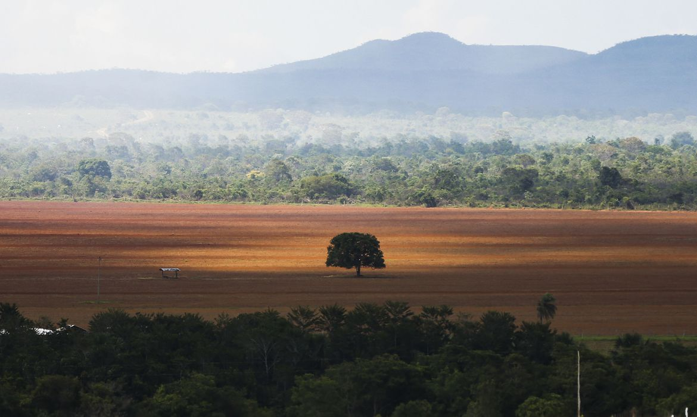

Inicío - O desmatamento
O desmatamento é um evento que basicamente é a remoção da vegetação de um certo espaço, normalmente causado por nós seres humanos com o intuito de ir em busca de minérios, agricultura ou só a intenção de usufruir da madeira das árvores. A remoção da vegetação provoca uma grande perda da biodiversidade assim como a perda do habitat de animais e plantas, e, ainda, impacta diretamente na elevação do número de espécies em extinção.
Sobre
A vegetação por mais que nos dê muitos recursos valiosos está cada vez mais diminuindo sua quantidade pelo motivo de que extraímos o que necessitamos porém não repomos o que gastamos apenas exigimos mais e mais dela.
Uma forma de ajudar a evitar que a terra seja tão destruída ao ponto de acabarem morrendo é a reflorestação ou recursos sustentáveis. Se parar para pensar por um segundo, não é algo assim tão difícil de se fazer. Você pode ajudar até mesmo só evitando ficar jogando lixo no chão em vez de jogar lixo no lixo.
Aprendemos na escola boa parte de nossas vidas sobre isso, mas ainda sim tem gente ignorante que só decide fechar os olhos para tudo isso apenas porque sim, sem uma razão minimamente decente. Ou então ficam com o pensamento “alguém vai resolver isso” . Ninguém vai resolver isso, esse pensamento é tão imaturo e ainda assim são muitos que pensam assim, VOCÊ tem que resolver isso, você quem jogou lixo no chão então porque todos tem que deixar tudo para o próximo fazer? Quem garante que realmente alguém vai fazer isso em vez de só ignorar porque também acha que “alguém vai limpar isso em certo momento” e esse pensamento só está servindo para acabarmos com a nossa própria existência.
Alguns exemplos de ongs que ajudam a causa:
- SOS Mata Atlântica
É uma organização criada em 1986 na qual o proṕrio nome ja deixa bem claro tem a missão defender a Mata Atlântica.
- Conservação Internacional Brasil (CI-Brasil)
A Conservação Internacional, é uma organização fundada em 1987 que visa a proteção da hotspots de biodiversidade da Terra, áreas selvagens ou regiões marinhas de alta biodiversidade ao redor do globo.
- WWF Brasil
A World Wide Fund for Nature Inc., "Fundo Mundial para a Natureza" em inglês, criada em 1961, foca na preservação da natureza e redução do impacto humano no meio ambiente
Entre outras, mas ainda assim eles são basicamente minoria comparando com os que fingem se importar ou nem estão se importando com nada disso.
Efeitos
O desmatamento, obviamente, tem muitos efeitos ruins no nosso dia-a-dia. Como por exemplo, o efeito estufa que vem nos causando uma certa mudança climática ao ponto de até mesmo geleiras começarem a derreterem. O efeito estufa tem feito todo o calor que era suposto estar saindo do nosso planeta ficar, então isso acaba acarretando no clima mais quente.
Mas não só isso, você desmatando você não só está tirando a vegetação dos lugares e a biodiversidade você está tirando o lar de muitos animais e até mesmo os levando à extinção, no final das contas você também vai estar ocasionando desequilíbrio ambiental que basicamente são alterações em um ecossistema que o afetam de maneira negativa. (Mas claro que não é apenas o desmatamento que causa o desequilíbrio ambiental, a poluição no geral também faz isso)
A principal consequência do desmatamento está atrelada ao desequilíbrio ambiental provocado pela perda da vegetação nativa. A remoção da vegetação provoca uma grande perda da biodiversidade assim como a perda do habitat de animais e plantas, e, ainda, impacta diretamente na elevação do número de espécies em extinção.
O processo de mudança das condições climáticas verificado no globo nos últimos anos é um fenômeno que tem como um dos causadores a crescente destruição da vegetação nativa de diferentes biomas nele. Ademais, a elevação da temperatura e a ocorrência de eventos climáticos extremos são apontadas por alguns pesquisadores como resultantes de processos de origem antrópica, sendo um dos principais o desmatamento.
O desmatamento no Brasil
O desmatamento no Brasil é fruto de um processo histórico de ocupação do território e de predação dos recursos naturais ao longo dos anos. Ele é marcado pela atuação de agentes econômicos importantes e pela ausência do Estado em promover políticas de prevenção e fiscalização da derrubada das matas.
A partir do ano de 2008, políticas ambientais de desenvolvimento sustentável e o incentivo às práticas de manejo e conservação das florestas possibilitaram uma diminuição do volume desmatado. Entretanto, nos últimos anos, a taxa de desmatamento no Brasil voltou a subir, em razão da atuação de madeireiros, mineradores e produtores agropecuários que se aproveitam da inércia do Estado para derrubar áreas de mata preservada.
De acordo com dados do Projeto de Mapeamento Anual da Cobertura e Uso do Solo no Brasil (MapBiomas), no ano de 2019, os biomas brasileiros mais desvatados foram:
Amazônia
Cerrado
Pantanal
Mata Atlântica
E aonde quero chegar falando tudo isso? O que quero dizer no final das contas é que devemos cuidar melhor do nosso planeta e uma das formas que você pode fazer isso é com a mobilidade sustentavel. No caso, os nosso meios de transportes são muito maléficos para o meio ambiente, então o melhor que podemors fazer sobre é evitar usa-los sem necessidade, se você pode chegar em um lugar com 5 minutos para que usar um carro?
Uma outra froma é em vez de usarmos trẽs carros na hora de sair com com amigos/parentes por que não evitar e usar apenas 2 ou 1 se ainda se tem espaço?
Conclusão
E aonde quero chegar falando tudo isso? O que quero dizer no final das contas é qie devmos cuidar melhor do nosso planeta e uma das formas que você pode fazer isso é com a mobilidade sustentavel. No caso, os nosso meios de transportes são muito maléficos para o meio ambiente, então o melhor que podemors fzer sobre é evitar usa-los sem necessidade, se você pode chegar em um lugar com 5 minutos para que usar um carro?
Uma outra forma é em vez de usarmos trẽs carros na hora de sair com com amigos/parentes por que não evitar e usar apenas 2 ou 1 há espaçp?
Informações de contato.
tiffany.guimaraes@escola.pr.gov.br